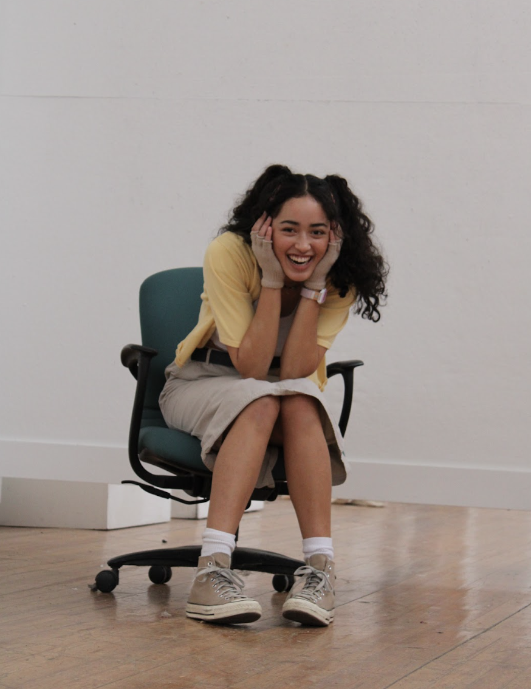

Recent Work
Projects
A&R, Fan Engagement
Warner Music Group internship project to create a fan engagement acmpaign for a potential Warner Records artist.
Capstone
International Marketing

Introducing American indie musicians to the global, Mandarin-speaking market via social media marketing.
Featured
Columnist
Global music industry, international college students' lifestyle, and emerging trends. Fully in Korean.